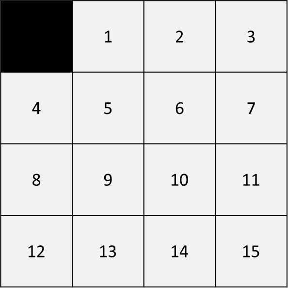
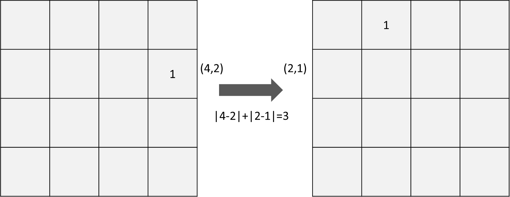
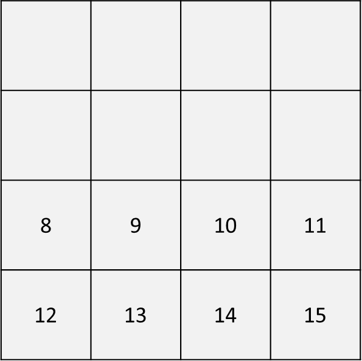
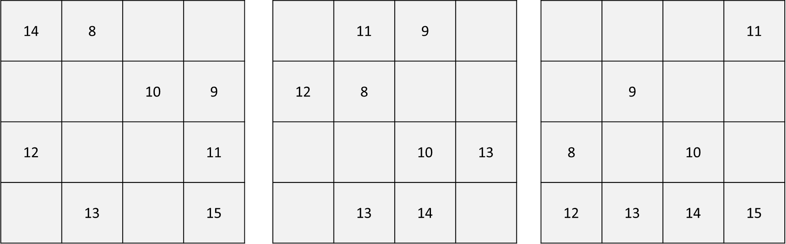
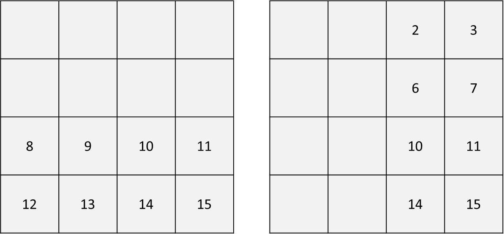
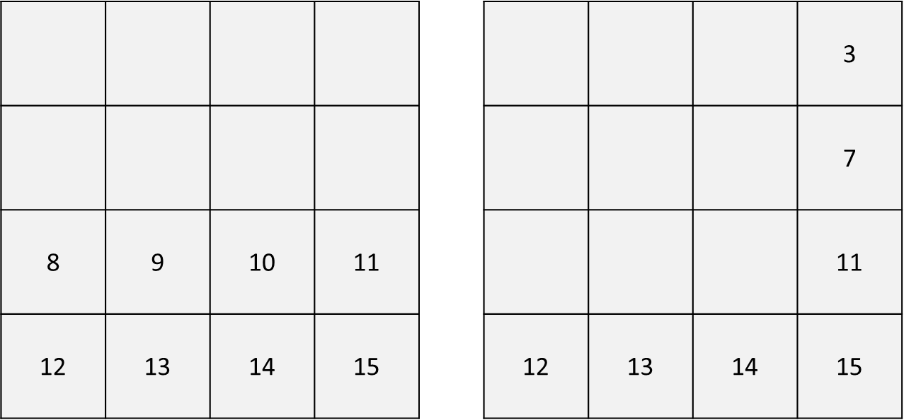
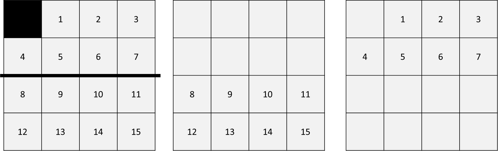

PDB（Pattern Database）是一種抽象化狀態空間並把 heuristic 存在表上供查找的方法。
我們用 15-puzzle 來說。15-puzzle 是一種單人遊戲，透過上下左右移動格子讓整個盤面到達如下圖的狀態（黑色是空格）。

我們做 A-star 搜尋或其它搜尋方法時，會用到 heuristic function，以 15-puzzle 這個遊戲來說，最簡單的 heuristic 莫過於計算曼哈頓距離：兩格之間透過上下左右移動來計算的最短距離。例如下圖左邊的 1 在(4,2)，但 1 的目標位置是在(2,1)，它們之間的曼哈頓距離就是 3。同理，我們能把全部十五個數字都用這個方式算出它們的曼哈頓距離總和，這個總和就是一個 heuristc value。

PDB 藉由設計不同 pattern，預先把不同 pattern 所有排列組合的 heuristic 都算出來，使用時再查詢。可以設計的 pattern 有很多種，像是：

上圖的 pattern 是 8~15 正確的位置。意思是我們只管 8~15，其餘忽略，計算 8~15 所有可能產生的盤面到這個盤面的 heuristc 並記起來。例如以下這些被打亂的盤面，每個都會計算到上面目標盤面的 heuristic 並記來。所以這個 pattern 總共要記錄 $\frac{16!}{8!}$ 個盤面，16! 指的是所有排列組合，8! 指的是忽略 1~7 + 空格。

建完之後，下次要用就直接查表即可得出這個 pattern database 的 heuristc value。
建好的 pattern database 可以藉由對稱的方式延伸成更多種 pattern。例如：下方左邊的 pattern 和下方右邊的 pattern 其實是一樣的意思，不需要重複建 pattern database，直接用對稱的方式就能利用。

一個 pattern database 對應到一個 heuristic value，那我們可以同時使用多個 pattern 嗎？可以的！但是要注意不同 pattern 之間是否會有交集。較不會出錯的方式是取所有 pattern 的 heuristic value 的最大值；直接把不同的 heuristic value 都加起來可能會出錯，因為 heuristc 須有 admissible 的性質，也就是不能高估 cost。如果兩個 pattern 之間有交集，兩個 pattern 的 heuristic 加起來可能使得某些地方被重複計算，令 cost 被高估。
範例：下圖兩個 pattern 有交集，直接兩個 heuristic value 加起來可能會導致違反 admissible 原則。

如果 heuristic 是用曼哈頓距離算，換成下面這種切分 pattern 的方式不會有交集，就可以把兩個 pattern 的到的值相加。

要建立多少個 pattern database？Pattern 要多大？依照你的應用場景、運算資源、記憶體大小等等來決定。建越大越多搜尋時越有幫助，但預先要計算越久，而且要準備較多的記憶體。